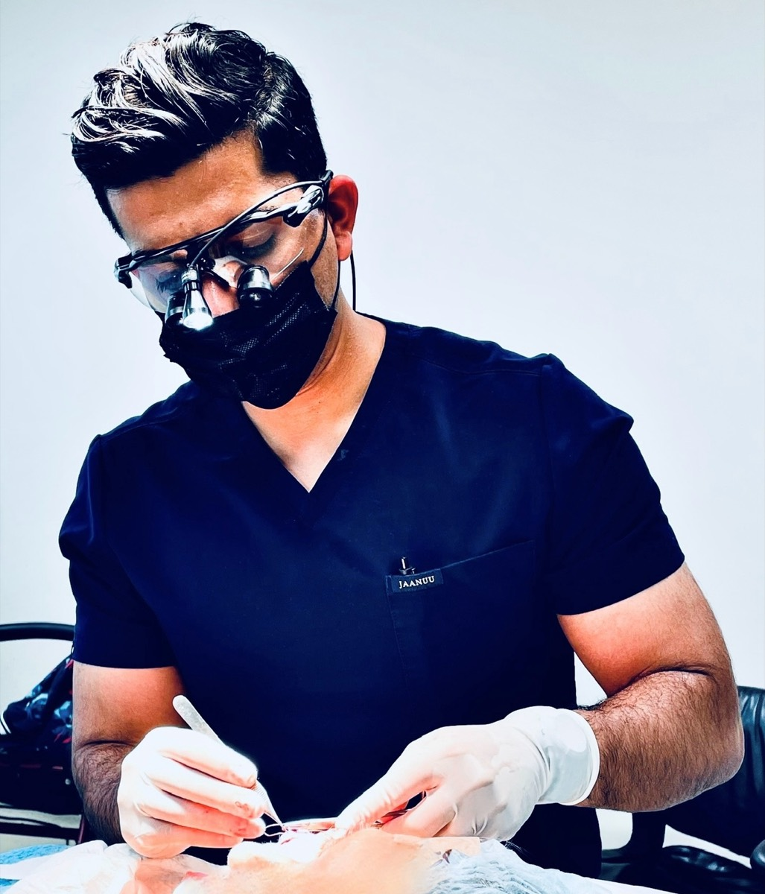

General Dermatology
Diagnosis and treatment of skin conditions at every age — acne, rashes, eczema, and beyond — with personalized, long-term care.
Now seeing patients at Dermatology Group of the Carolinas — accepting new patients at both Charlotte locations.
Dr. Amit Om is a board-certified dermatologist and fellowship-trained Mohs micrographic surgeon at Dermatology Group of the Carolinas. From routine skin checks to complex facial reconstruction, he treats every patient with the same goal: remove the cancer completely, and leave as little trace as possible.
Accepting new patients of all ages at both Charlotte locations.
Diagnosis and treatment of skin conditions at every age — acne, rashes, eczema, and beyond — with personalized, long-term care.
Thorough full-body exams using dermatoscopy for early detection. As a cutaneous oncologist, Dr. Om knows what early skin cancer looks like.
The gold standard for treating skin cancer on the face and other delicate areas — 100% of the margin checked under the microscope, healthy skin preserved.
Specialized facial reconstruction after Mohs surgery, designed for natural-looking results that restore both form and function.
Precise removal of cysts, lipomas, keloids, and bothersome moles, with equal attention to your comfort and the final cosmetic result.
Advanced techniques to soften and refine visible scars, with an individualized plan for smoother skin and renewed confidence.
The tumor is removed and examined in stages — so surgery ends the moment the margins are clear, and not a layer of healthy skin more.
The visible tumor and a thin layer of surrounding tissue are removed under local anesthesia.
The tissue edges are marked with colored dyes and mapped, so any remaining cancer can be located exactly.
Dr. Om reads the slides himself, checking 100% of the surgical margin under the microscope while you wait.
Once margins are clear, the wound is reconstructed the same day for the best functional and cosmetic outcome.

After medical school at MUSC and dermatology residency at Florida State, Dr. Om completed an ACGME fellowship in micrographic surgery and dermatologic oncology in Los Angeles. He holds two board certifications and has authored 23 peer-reviewed publications.
Meet Dr. OmReviews sourced from Google and Yelp. Names withheld for patient privacy.
Dr. Om put me at ease and has done a beautiful job, both with the Mohs procedure and the repair of the site on my nose.Mohs surgery patient
Excellent work by Dr. Om. Easy to understand his explanation about the procedure that I needed. Very professional.Surgical patient
Dr. Om is a fantastic Mohs surgeon! He is very professional and does great work. 10/10, highly recommend.Mohs surgery patient
Early detection is everything in skin cancer. Book a screening or surgical consultation at either Charlotte location.
Book an appointment